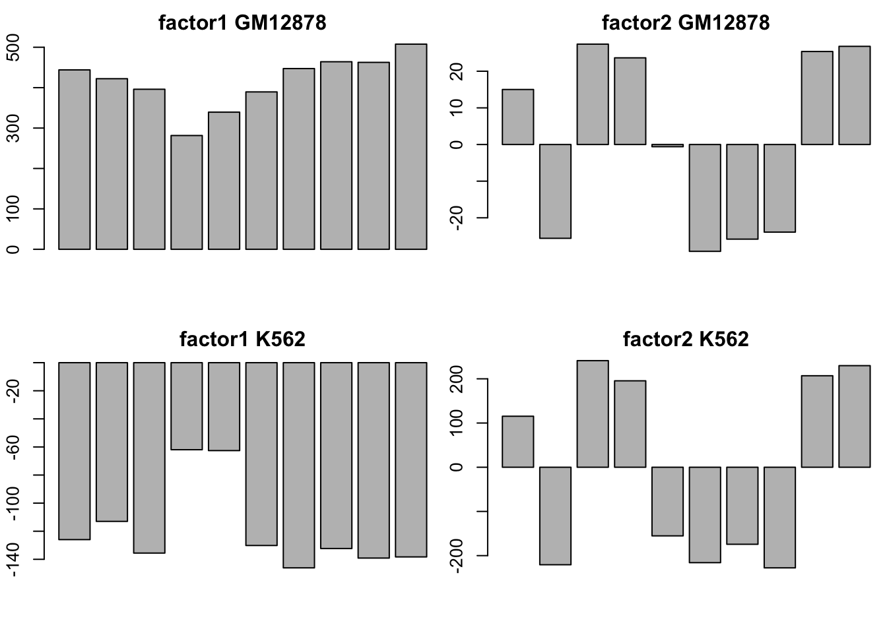
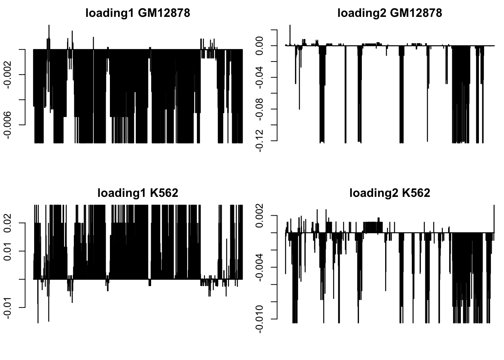

Last updated: 2017-01-31
Code version: 69c32a8
This file is for the chip seq data Kevin give to me. And will put it to workflowr page.
library(data.table)
K562 =fread("~/HG/LogisticFlash/data/K562_chr11_binary.txt")
GM12878 = fread("~/HG/LogisticFlash/data/GM12878_chr11_binary.txt")There are a lot lines with all zero values, so we can just use the subset rows. Here I choose 851 - 1650 row for both of the data: K562 and GM12878. There is no row names of the data. As Kevin suggested, I use the a consecutive subset of the rows to make a small matrix. I choose the same 800 rows for both data sets for consistency. For both data, Logistic flash provides estimations of the underlying low rank structure and both of them are rank 2. Since the rank is small and I manualy set the maxiter = 100, it only takes 1min to run our algorithm.
K562_sub_1 = matrix(as.numeric(as.matrix(K562[851:1650,])),nrow = 800)
colnames(K562_sub_1) = colnames(K562)
source('~/HG/LogisticFlash/Rcode/GD_Rfuncrtions.R')
K562_sub1_1 = 2*( K562_sub_1 - 1/2)
GL_K562_sub_1 = GL_flash(K562_sub1_1,K = 9)[1] 2
[1] "stop here due to no signal"GM12878_sub_1 = matrix(as.numeric(as.matrix(GM12878[851:1650,])),nrow = 800)
colnames(GM12878_sub_1) = colnames(GM12878)
source('~/HG/LogisticFlash/Rcode/GD_Rfuncrtions.R')
GM12878_sub1_1 = 2*( GM12878_sub_1 - 1/2)
GL_GM12878_sub_1 = GL_flash(GM12878_sub1_1,K = 9)[1] 2
[1] "stop here due to no signal"par(mfrow = c(2,2),mar = c(5,4,4,2)-1.9)
barplot(GL_GM12878_sub_1$f[,1],main = "factor1 GM12878")
barplot(GL_GM12878_sub_1$f[,2],main = "factor2 GM12878")
barplot(GL_K562_sub_1$f[,1],main = "factor1 K562")
barplot(GL_K562_sub_1$f[,2],main = "factor2 K562")
the names of the columns are as follows (with same order as the above plots):
"CTCF" "H3K27ac" "H3K27me3" "H3K36me3" "H3K4me1" "H3K4me2" "H3K4me3" "H3K9ac" "H4K20me1" "WCE"Acetylation of H3K27 has also been reported. Since a lysine residue cannot be both methylated and acetylated you would expect H3K27ac to be antagonistic to the repression of gene expression by H3K27me2/3. Indeed, data are showing that H3K27ac is associated with active transcription and antagonism of H3K27me3 regulated genes (Tie et al., 2009)http://epigenie.com/key-epigenetic-players/histone-proteins-and-modifications/histone-h3k27/
par(mfrow = c(2,2),mar = c(5,4,4,2)-1.9)
barplot(GL_GM12878_sub_1$l[,1],main = "loading1 GM12878")
barplot(GL_GM12878_sub_1$l[,2],main = "loading2 GM12878")
barplot(GL_K562_sub_1$l[,1],main = "loading1 K562")
barplot(GL_K562_sub_1$l[,2],main = "loading2 K562")
sessionInfo()R version 3.3.0 (2016-05-03)
Platform: x86_64-apple-darwin13.4.0 (64-bit)
Running under: OS X 10.12.2 (unknown)
locale:
[1] en_US.UTF-8/en_US.UTF-8/en_US.UTF-8/C/en_US.UTF-8/en_US.UTF-8
attached base packages:
[1] stats graphics grDevices utils datasets methods base
other attached packages:
[1] workflowr_0.3.0 rmarkdown_1.3
loaded via a namespace (and not attached):
[1] backports_1.0.5 magrittr_1.5 rprojroot_1.2 htmltools_0.3.5
[5] tools_3.3.0 rstudioapi_0.6 yaml_2.1.14 Rcpp_0.12.8
[9] stringi_1.1.1 knitr_1.15.1 git2r_0.18.0 stringr_1.1.0
[13] digest_0.6.11 evaluate_0.10 This R Markdown site was created with workflowr